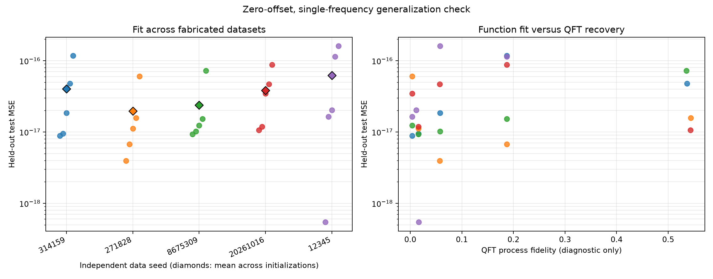

Target: y=0.55 cos(2πx)+0.25 sin(2πx), with zero y-intercept. This is one non-DC frequency, k=1, with cosine and sine quadrature coefficients. Encoding is RY(2πx) on q0; readout is ideal Z on q1. Training uses supervised MSE only. QFT process fidelity is diagnostic only.
5 independent dataset seeds × 5 parameter initializations = 25 runs. Each dataset has 64/128/512 train/validation/test examples. All frequency scores below are dominant-frequency accuracy; they do not measure multi-frequency recovery.
Lowest test MSE: 5.4229673e-19 (data seed 12345, initialization 43); QFT process fidelity 0.0161383.
Highest test MSE: 1.6047867e-16 (data seed 12345, initialization 44); QFT process fidelity 0.0578684.

Parameter movement and sensitivity diagnostics · Sensitivity data
| Data seed | Initializations | Test MSE mean ± population SD | k=1 dominant frequency accuracy | QFT fidelity mean ± population SD |
|---|---|---|---|---|
| 314159 | 5 | 4.0429722e-17 ± 4.09e-17 | 100.0% | 0.16012 ± 0.199 |
| 271828 | 5 | 1.9597242e-17 ± 2.08e-17 | 100.0% | 0.16161 ± 0.202 |
| 8675309 | 5 | 2.391955e-17 ± 2.44e-17 | 100.0% | 0.1599 ± 0.199 |
| 20261016 | 5 | 3.83807e-17 ± 2.83e-17 | 100.0% | 0.16148 ± 0.202 |
| 12345 | 5 | 6.2361771e-17 ± 6.32e-17 | 100.0% | 0.05532 ± 0.0685 |
| Rank | Data seed | Init seed | Test MSE | k=1 peak correct | QFT process fidelity | Report |
|---|---|---|---|---|---|---|
| Lowest MSE | 12345 | 43 | 5.4229673e-19 | True | 0.0161383 | run report |
| Highest MSE | 12345 | 44 | 1.6047867e-16 | True | 0.0578684 | run report |
| 2 | 271828 | 44 | 3.9650147e-18 | True | 0.0573396 | run report |
| 3 | 271828 | 45 | 6.7357553e-18 | True | 0.186881 | run report |
| 4 | 314159 | 46 | 8.8805842e-18 | True | 0.00380969 | run report |
| 5 | 8675309 | 43 | 9.3181296e-18 | True | 0.016014 | run report |
| 6 | 314159 | 43 | 9.5164055e-18 | True | 0.0160036 | run report |
| 7 | 8675309 | 44 | 1.0162773e-17 | True | 0.0574719 | run report |
| 8 | 20261016 | 42 | 1.0623697e-17 | True | 0.543223 | run report |
| 9 | 271828 | 43 | 1.1151813e-17 | True | 0.0159558 | run report |
| 10 | 20261016 | 43 | 1.191349e-17 | True | 0.0159707 | run report |
| 11 | 8675309 | 46 | 1.2335558e-17 | True | 0.00383698 | run report |
| 12 | 8675309 | 45 | 1.5284484e-17 | True | 0.187009 | run report |
| 13 | 271828 | 42 | 1.5775828e-17 | True | 0.543971 | run report |
| 14 | 12345 | 46 | 1.6461168e-17 | True | 0.00374209 | run report |
| 15 | 314159 | 44 | 1.8605304e-17 | True | 0.0574362 | run report |
| 16 | 12345 | 42 | 2.0268488e-17 | True | 0.0117185 | run report |
| 17 | 20261016 | 46 | 3.4635258e-17 | True | 0.003918 | run report |
| 18 | 20261016 | 44 | 4.6946721e-17 | True | 0.0573805 | run report |
| 19 | 314159 | 42 | 4.805494e-17 | True | 0.536342 | run report |
| 20 | 271828 | 46 | 6.03578e-17 | True | 0.00392213 | run report |
| 21 | 8675309 | 42 | 7.2496807e-17 | True | 0.535179 | run report |
| 22 | 20261016 | 45 | 8.7784335e-17 | True | 0.186919 | run report |
| 23 | 12345 | 45 | 1.1405824e-16 | True | 0.187131 | run report |
| 24 | 314159 | 45 | 1.1709138e-16 | True | 0.187001 | run report |